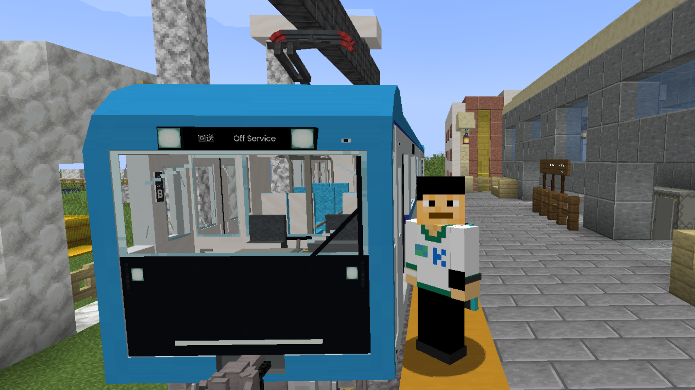

winsanmwtv

I am winsanmwtv, the person writing this article right now. I joined the Limaru community as the player Phongsiri33013 on August 16, 2020. Although my English isn't perfect, I joined because I have a deep love for Minecraft, alongside all forms of transportation, especially Metros and Railways. I have a major dream of one day creating my own subway network. Alongside this, I am a developer, currently studying Computer Science. You can think of me as a Junior Developer.
Limaru provided a very warm welcome. It's a small community that genuinely helps people pursue their dreams—from building a simple structure, to designing a town, or even constructing an entire city.